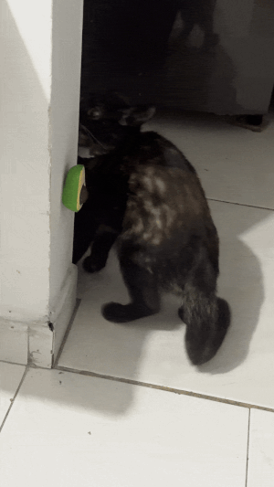
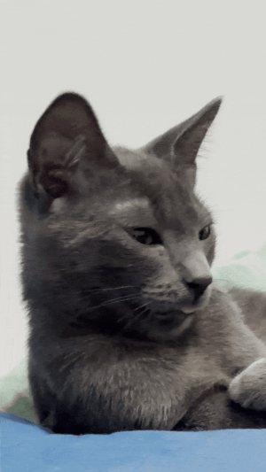

Miel de Maple 🍯
Miel is the pampered princess of the family. She craves attention and affection 24/7, demanding
cuddles and playtime whenever she wants. If you throw a ball, she’ll happily fetch it and bring it
back for another round. Usually calm and serene, she has bursts of playful energy that seem endless
when she’s in the mood. Her charm is irresistible, and she makes every moment at home feel special.

Morita 🐈
Morita is the mischievous little troublemaker of the household. She climbs everywhere, even where
she’s not supposed to, and is the “bad influence” of the gang. Curious and playful, she experiments
with everything she finds, testing her humans’ patience almost daily. Nervous and cautious, she’s
easily startled by visitors or loud noises, but her cheeky personality always shines through.

Chile 🌶️
Chile is the classic follower—wherever Miel and Morita go, he goes too. He’s the least spoiled of the
three and prefers minimal contact, almost like he’s on “pandemic mode.” He plays rough with his
sisters and has a curious obsession with Miel that seems more affectionate than anything else.
Independent yet easily influenced, Chile adds a subtle, quirky balance to the family dynamics.

Selva 🐕
Selva might look fierce, but she’s a gentle giant at heart. Protective of her family, she only shows
her strength if she senses a real threat. Otherwise, she’s the sweetest dog in the world. Conscious
of her size, she approaches smaller dogs carefully, often crouching to invite play. Her favorite
activity is running games—chasing and being chased—and she does it with pure joy and boundless energy.